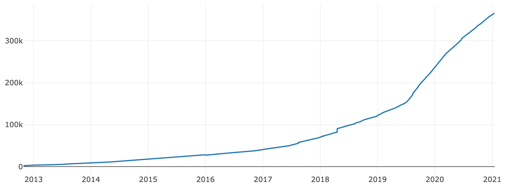

Stoicism as a Way of Life

“If someone else handed over your body to a person whom you encountered, you’d be furious; but that you hand over your mind to anyone who comes along, so that, if he abuses you, it becomes disturbed and confused, do you feel no shame at that?” — Epictetus
The stoic mindset has been studied and adopted by Elon Musk, Bill Gates, Warren Buffett and other high achievers of today (as well as many influential people from the past, including George Washington, Thomas Jefferson and Ralph Waldo Emerson).
Below we’ll explore why stoicism is considered an ideal productivity system by the highly successful entrepreneur and author Tim Ferriss. We’ll learn what it is, why and how it helps create changes in your life, why you might want to integrate some of its wisdom into your daily routines.
There has been a surge in popularity in the past decade of “stoicism”, a highly practical approach to living that can lead to an abundance of internal peace as well as external success in our work and personal lives.
 The Stoicism Subreddit, started in 2009, grew its membership from 7k in 2013 to over 366k in 2021.
While some in personal productivity communities are aware of what stoicism is, it remains relatively unknown to the general population.
We can control how we approach things even if we cannot control what happens to us. We must learn to accept and work with reality while always striving to improve ourselves using these four cardinal virtues:
Wisdom: the ability to navigate complex situations in a rational manner
Temperance: the exercise of restraint and maintaining moderation in all aspects of life
Justice: treating others fairly in all situations, even when they have done wrong
Courage: facing daily and major challenges with clarity and integrity
the “Floating Clouds of thought” concept: Zen, Buddhism and Stoicism
Stoicism has some interesting overlapping characteristics with Buddhism and Zen teachings.
One principle that links Stoicism to traditions that value mindfulness meditation has to do with the reduction of thoughts within the mind. The experience that those who practice meditation report is that by quieting the mind, the naturally-occurring essence of the life within us not blocked by having our attention be held by thoughts.
At the core of Stoicism is the notion that as individuals, there are only a few things that are within our control. By paying attention to the thoughts that create anxiety within us, we can then ask “is this something that I can either control or influence?” If not, then we allow it to be. We accept it as is, for it cannot at this moment be any other way. You cannot change the present moment. It is the inevitable result of all things that grew toward its current state. You only have one option in any moment, and that is in how you direct your awareness. You can choose what to focus on, where to put your attention, what to do and what to say. And through each moment’s choice, you participate in the creative unfolding of the future.
Zen and Buddhist traditions teach that thoughts are like clouds in the sky, passing by, blocking the sun from time to time, but above them are always blue skies. We cannot control the clouds, meaning we cannot control the thoughts that pass through our minds. But we can choose to focus our awareness not on the thoughts but on something like our breathing, or body awareness.
Through a different mechanism, but to a similar end, Stoicism trains us to have a natural reduction in the number of and frequency of recurring thoughts that may swim around in our heads and pop up to distract us from what is right in front of us. We have only one locus of control in our minds. We therefore can not be both allowing some thought to hold our attention which is not related either to a matter at hand which would benefit from your attention on it here and now, so in other words we cannot expect to be both preoccupied by some currently irrelevant and non-actionable thought, and also simultaneously be present and at our best#If we are not allowing our awareness to be as it was built to be, then we are allowing our power to be used. This can only happen at the highest level when we are “feeling the flow state”. This can only be felt when our awareness is here and now, enjoying the process of either creating something, improving something, or simply enjoying some experience.
Comments